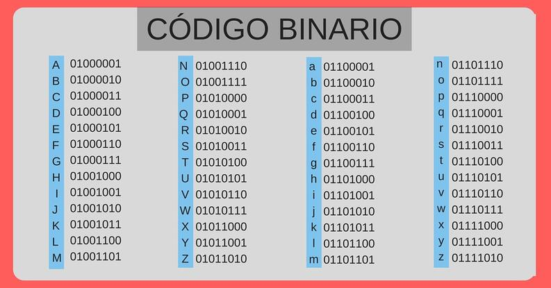

La informática (información + automática) es la ciencia que estudia el tratamiento automático de la información digital utilizando ordenadores.
Un ordenador es una máquina electrónica capaz de procesar datos muy rápidamente.
Un ordenador es un conjunto de dispositivos electrónicos capaz de procesar datos muy rápidamente.
Un ordenador es un conjunto de dispositivos electrónicos capaz de procesar datos muy rápidamente.
Un ordenador es un conjunto de dispositivos electrónicos capaz de procesar datos muy rápidamente.
La información que introducimos en el ordenador debe ser traducida a un lenguaje que el ordenador pueda entender.
El microprocesador (el cerebro del ordenador) está formado por millones de diminutos transistores que se activan y desactivan automáticamente.
Por tanto, el ordenador habla
en un lenguaje de 0 y 1 (110011010) que se llama código
o lenguaje binario.
Es el código que se utiliza para traducir la información al ordenador.
Es el código que se utiliza para traducir la información al ordenador.
Es el código que se utiliza para traducir la información al ordenador.
¿Qué secuencia de bits enviamos al ordenador cuando escribimos la palabra GATO?
Es el código que se utiliza para traducir la información al ordenador.
¿Qué secuencia de bits enviamos al ordenador cuando escribimos la palabra GATO?
| G | |||
| 01000111 |
Es el código que se utiliza para traducir la información al ordenador.
¿Qué secuencia de bits enviamos al ordenador cuando escribimos la palabra GATO?
| G | A | ||
| 01000111 | 01000001 |
Es el código que se utiliza para traducir la información al ordenador.
¿Qué secuencia de bits enviamos al ordenador cuando escribimos la palabra GATO?
| G | A | T | |
| 01000111 | 01000001 | 01010100 |
Es el código que se utiliza para traducir la información al ordenador.
¿Qué secuencia de bits enviamos al ordenador cuando escribimos la palabra GATO?
| G | A | T | O |
| 01000111 | 01000001 | 01010100 | 01001111 |